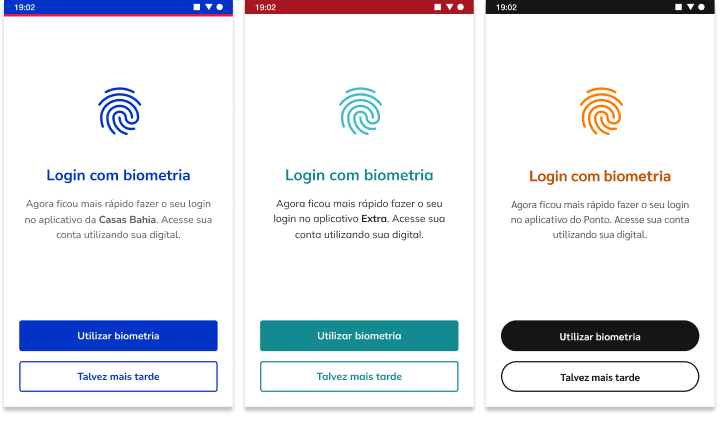

Product designer for mobile apps of three e-commerce brands: Casas Bahia, Ponto and Extra. I was part of the APP experience squad, a cross-functional team that worked together with other squads.
We reduced the bounce rate on the login process that would affect several parts of the interface, especially the buying journey, visible on user metrics.
